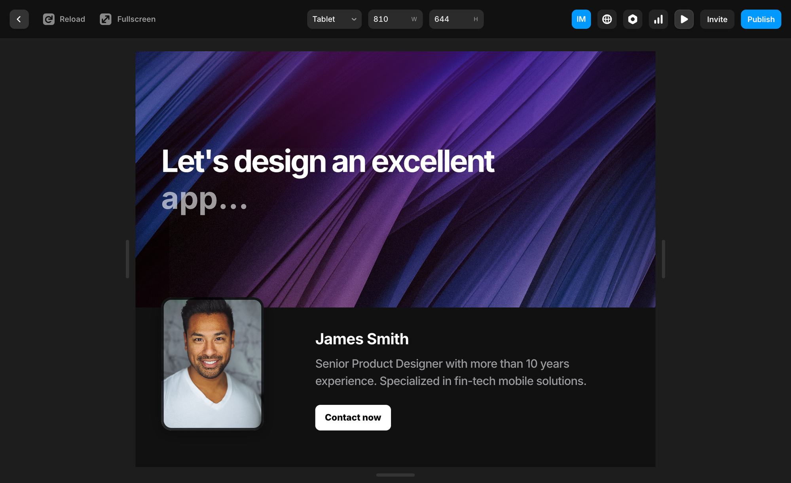
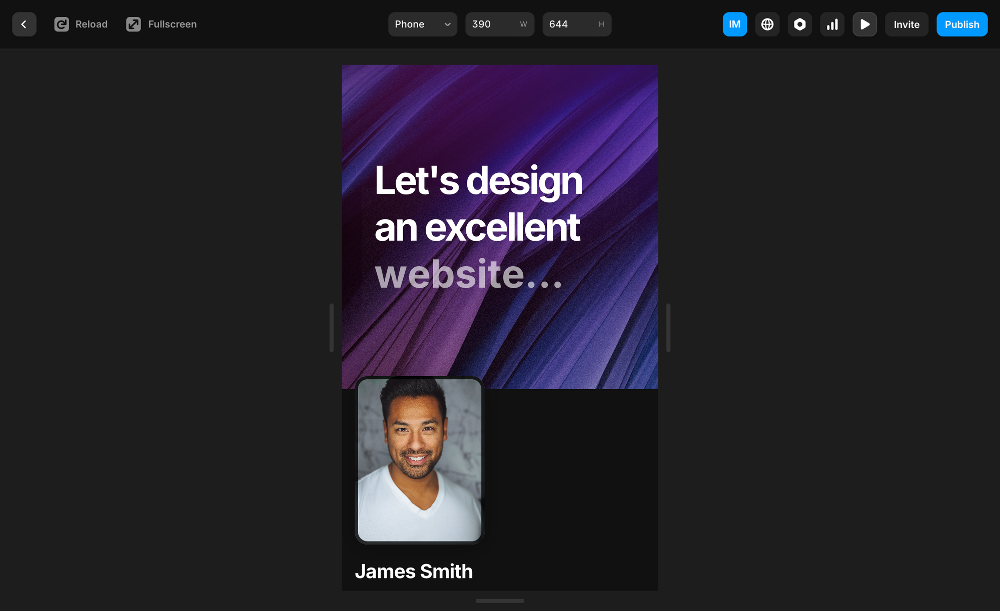
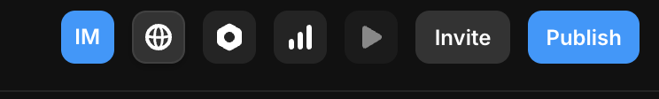
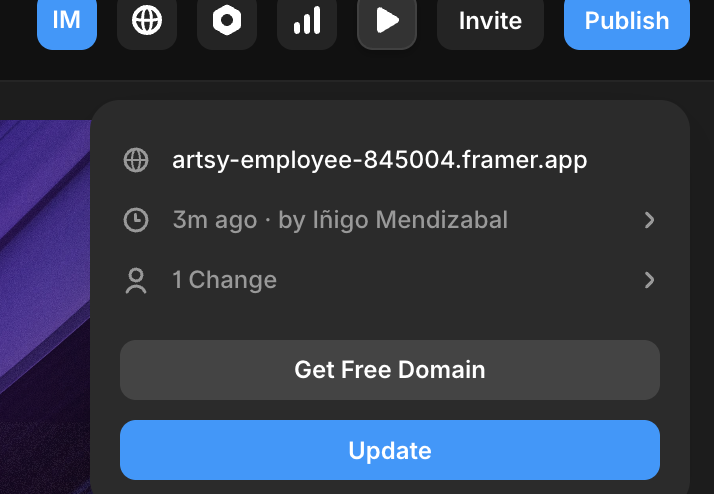

App móvil Robin Luz
Cuando entré al proyecto la app ya existía, pero nadie la usaba. Jerarquías rotas, colores que no funcionaban, y un CEO convencido de que la solución eran tooltips. Los datos decían otra cosa.
Una app con buenas intenciones y malos flows
El equipo había construido algo funcional, pero la experiencia no acompañaba. Colores sin sistema, jerarquía visual plana, pantallas sobrecargadas de datos. Los usuarios llegaban y se iban antes de subir su primera factura.
La propuesta interna era añadir tooltips que explicaran cada elemento. Mi tarea fue entender si eso realmente resolvía el problema, o si era síntoma de algo más profundo.

Flows originales — antes del rediseño
Reescribiendo la Home
Jerarquía visual clara, colores accesibles conforme a la paleta de Robin Luz, y el dato que el usuario necesita ver al abrir la app — cuánto está ahorrando.

Home — proceso de rediseño

Ver detalles — v0.99 → versión final

Flow completo — accesibilidad, tooltip FAQ y Pasos
Los tooltips en su sitio correcto
El CEO quería tooltips en todas partes como sustituto a la formación del usuario. El research mostró que el problema real era la curva de entrada, no la comprensión de la herramienta.
En el segundo flow diseñé dos círculos de contexto — FAQ y Cómo usar — que aparecen en la pantalla de inicio cuando el usuario los necesita, sin interrumpir la tarea principal.
- Colores más accesibles y conformes a la paleta de marca
- Modal de Pasos con instrucciones progresivas
- Panel FAQ contextual, no bloqueante
- Importancia al ahorro como métrica protagonista
Tres iteraciones para convencer a los datos
El proceso de primera activación pasó por tres versiones distintas antes de dar con la que convertía. Cada iteración tenía un objetivo claro y métricas para validarlo.
El onboarding largo
8 pantallas de introducción que explicaban cada funcionalidad. Los usuarios leían, pero no activaban. Alto abandono antes de llegar a la pantalla de upload.

Reducción y fotografía
4 pantallas con fotografía real para generar empatía y reducir fricción cognitiva. Mejor retención en las primeras pantallas, pero la conversión final seguía sin convencer.

Versión definitiva — Copy orientado a convertir
Ni explicaciones ni tooltips. Un CTA directo con dos variantes de copy testadas con usuarios reales. El foco: el ahorro que el usuario va a conseguir, no cómo funciona la app. Reducción de abandono del 55%.

App Store y Google Play
El rediseño culminó con la preparación de todos los assets para las tiendas de aplicaciones. Mockups de presentación, screenshots optimizados y la identidad visual coherente con la nueva dirección de marca.

App Store · Google Play — mockups de presentación